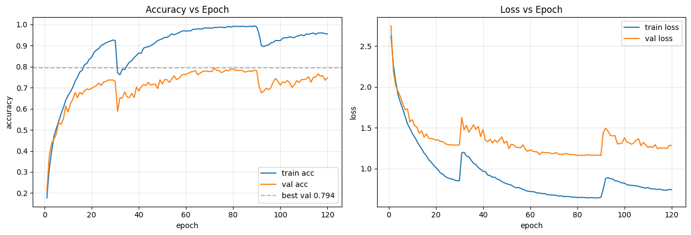
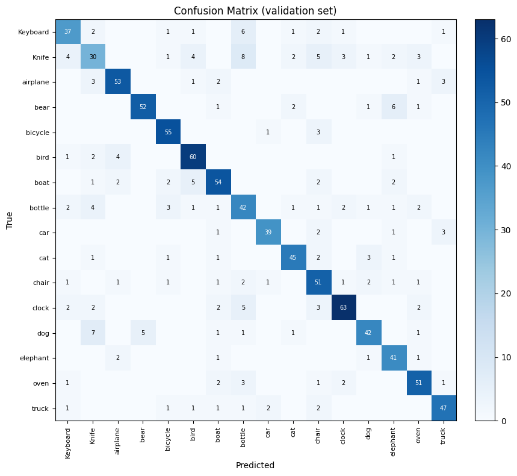
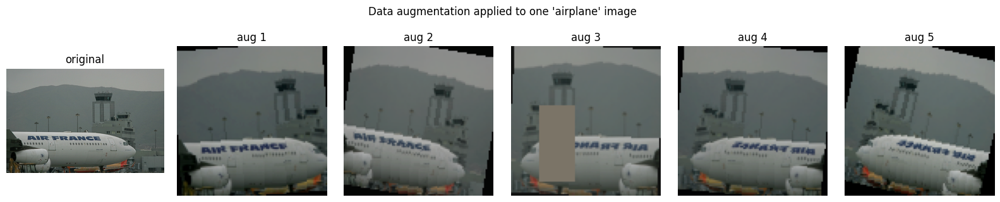
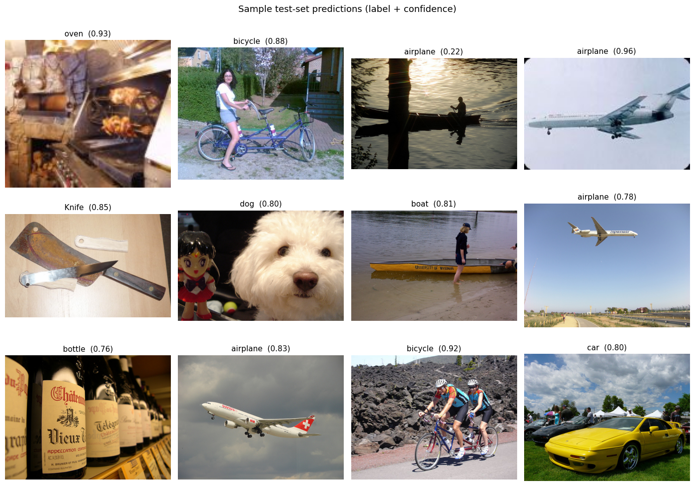

Image Classification
Learning visual patterns to distinguish between 16 image categories.
Explore Image Classification →DEEP LEARNING · COMPUTER VISION
Exploring how deep learning models interpret visual information through image classification and automated image captioning.
PROJECT OVERVIEW
These projects investigate two computer vision tasks. Image classification predicts a category for an image, while image captioning generates a natural-language description of visual content.
Together, they demonstrate the application of deep learning, model evaluation and critical interpretation of prediction errors.
Learning visual patterns to distinguish between 16 image categories.
Explore Image Classification →Combining visual features and language generation to describe images.
Explore Image Captioning →PROJECT 1 · IMAGE CLASSIFICATION
The objective was to develop and evaluate a deep learning model capable of assigning images to one of 16 categories.
The project involved model development, training, validation, performance analysis and interpretation of classification errors.
The image classification model contained approximately 3.19 million parameters. Model performance was examined using validation accuracy, training curves and a confusion matrix.
The reported validation accuracy was 79.37%, with a Kaggle public score of 0.72. These are different evaluation measures and should not be treated as directly interchangeable.
The results demonstrate the model's ability to distinguish multiple visual categories, while also highlighting the need to examine category-specific errors rather than relying on overall accuracy alone.
Overall accuracy may conceal differences in performance between image categories. The confusion matrix helps identify weaker categories and examine misclassification patterns.
CLASSIFICATION VISUALIZATIONS




PROJECT 2 · IMAGE CAPTIONING
Image captioning combines computer vision and natural-language generation. The goal was to generate descriptions of images using visual representations and a language-generation model.
The approach used MobileNetV2 to extract visual features and a Transformer decoder to generate captions.
The reported BLEU-4 score was approximately 0.1655. This provides a quantitative measure of overlap between generated captions and reference descriptions.
Caption quality can be affected by overfitting and imperfect grounding of generated words in the actual image. BLEU-4 alone does not establish whether a caption is accurate or meaningful.
Reviewing both successful and unsuccessful examples is therefore an important part of evaluating this project.
CAPTIONING EXAMPLES
The following prediction/reference pairs are transcribed from the original validation notebook. They are text-only examples: the underlying images are not included here, so the reference captions are a comparison point, not independent verification of visual accuracy.
Generated: “a skateboarder does a trick on a ramp”
Reference: “a man on rollerblades is doing a trick”
Captures a trick but confuses the activity.
Generated: “a man in a white shirt is playing baseball”
Reference: “a baseball player attempts to catch a ball while another runs towards the base”
Identifies baseball but omits the action and other player.
Generated: “a man in a blue shirt is doing a trick on a bicycle”
Reference: “a group of boys play basketball together”
Incorrectly identifies the central activity.
Generated: “a dog running on a road”
Reference: “a boy is doing a trick on his skateboard in a park”
Incorrectly identifies the subject and setting.
PROJECT MATERIALS
The figures and model outputs above illustrate the experiments and their evaluation. Full notebooks and model checkpoints are not hosted on this website.
Return to All Projects